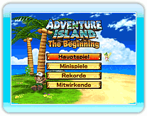
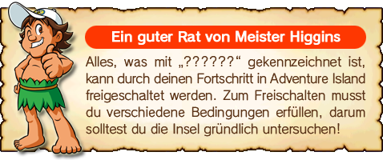

Drücke auf dem Titelbildschirm 
, um das Hauptmenü anzuzeigen. Wähle mit
 einen Modus aus, und
einen Modus aus, und drücke
, um deine Auswahl zu bestätigen.
● Hauptspiel
Übernimm die Rolle von Meister Higgins, um Tina aus der Gefangenschaft zu befreien.
● Minispiele
Minispiele stehen im Einzelspieler- und im Mehrspielermodus zur Verfügung. Du kannst ein beliebiges der vier Minispiele auswählen.
● Rekorde
Sieh dir die Rekorde für das Hauptspiel, die Minispiele und die Nintendo Wi-Fi Connection-Rangliste an.
● Mitwirkende
Sieh dir die Namen der Entwickler an.
